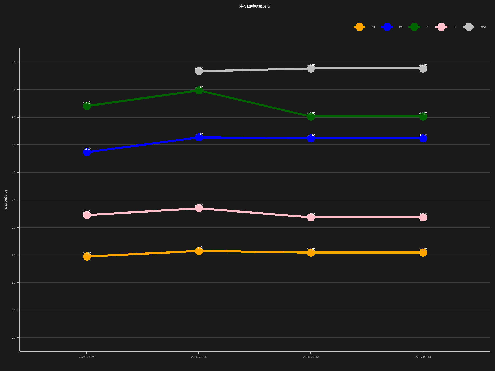

庫存週轉次數趨勢圖
以下是根據 Google Sheets 資料生成的庫存週轉次數趨勢圖：
將所有的 R 程式碼放在這個程式碼區塊中執行
載入所需的套件
請確保這些套件已經安裝 (install.packages(c(“googlesheets4”, “dplyr”, “tidyr”, “ggplot2”, “knitr”, “showtext”, “sysfonts”)))
library(googlesheets4) # 用於讀取 Google Sheets
library(dplyr) # 用於資料處理 (%>% 管線運算子、select, mutate, filter)
library(tidyr) # 用於資料重塑 (pivot_longer)
library(ggplot2) # 用於資料視覺化
library(knitr) # 如果需要在 Quarto 中生成表格等
library(showtext) # 用於字體處理，確保中文字體正確顯示和嵌入
library(sysfonts) # showtext 的依賴套件，用於查找和添加字體
showtext 字體處理設定
添加您想使用的字體到 R 的字體資料庫
請根據您電腦上微軟正黑體字體檔案的實際路徑和檔案名進行調整
這裡使用 Windows 系統的典型路徑和檔案名作為範例
font_add(
“Microsoft JhengHei”, # 在 R 中用於 theme() 的字體家族名稱
regular = “C:/Windows/Fonts/msjh.ttc”, # 標準字體檔案路徑
bold = “C:/Windows/Fonts/msjhbd.ttc”# 粗體字體檔案路徑 (如果需要)
)
啟用 showtext 的自動處理功能
這會讓 R 的繪圖設備自動使用 showtext 來處理文字渲染
showtext_auto()
showtext_opts(dpi = 300) # 可選：設定 DPI，影響文字大小比例
設定您的 Google Sheets 分享連結和工作表名稱
請將以下連結和名稱替換成您的實際資訊
sheet_url <- “https://docs.google.com/spreadsheets/d/1GkbTMO84splVGtIE2gOJaGcD7sPb0847MchUmyTTWJE/edit?pli=1&gid=623332197” # 您的 Google Sheets URL
sheet_name <- “數據紀錄” # 您的工作表名稱
讀取 Google Sheets 資料 (範圍從 A 到 Y)
sheet_data_raw <- read_sheet(
sheet_url,
sheet = sheet_name,
range = “A:Y”, # 設定讀取範圍從 A 欄到 Y 欄，確保包含所有庫別的週轉次數數據
col_names = TRUE # 假設第一行是欄位名稱
)
資料清理與重塑
將資料從原始格式轉換為適合 ggplot2 繪圖的長格式
sheet_data_selected <- sheet_data_raw %>%
# 選取需要的欄位並重新命名以便後續使用
select(
日期 = 資料日期,# 選取並重新命名日期欄位
總倉 = 總倉當期30天週轉次數,# 選取總倉週轉次數 (使用實際讀取到的欄位名稱)
PT = PT當期30天週轉次數, # 選取 PT 週轉次數 (使用實際讀取到的欄位名稱)
PS = PS當期30天週轉次數, # 選取 PS 週轉次數 (使用實際讀取到的欄位名稱)
PH = PH當期30天週轉次數, # 選取 PH 週轉次數 (使用實際讀取到的欄位名稱)
PK = PK當期30天週轉次數# 選取 PK 週轉次數 (使用實際讀取到的欄位名稱)
) %>%
# 將所有週轉次數欄位從寬格式轉換為長格式
pivot_longer(
cols = c(總倉, PT, PS, PH, PK), # 指定需要轉換的欄位，包含所有五個庫別
names_to = “類別”,# 新增一個欄位 ‘類別’ 來儲存原來的欄位名稱
values_to = “週轉次數” # 新增一個欄位 ‘週轉次數’ 來儲存對應的數值
) %>%
# 進行資料清理和型態轉換
mutate(
週轉次數 = as.numeric(週轉次數), # 確保週轉次數為數值型態
日期_Date = as.Date(日期),# 先將原始日期轉換為 Date 型態，用於確保 factor 順序
日期 = factor(日期_Date)# 將 Date 型態的日期轉換為 factor 型態，用於 X 軸的等距排列
) %>%
# 移除不再需要的欄位或 NA 值
filter(!is.na(週轉次數)) %>% # 移除週轉次數為 NA 的行，NA 的點不會被繪製
select(-日期_Date) # 移除用於轉換的中間日期欄位，只保留 factor 日期
生成圖表
定義每個類別對應的顏色，確保包含所有五個庫別
category_colors <- c(
“總倉” = “grey”,# 總倉顏色
“PT” = “pink”, # PT 顏色
“PS” = “darkgreen”, # PS 顏色
“PH” = “orange”, # PH 顏色
“PK” = “blue”# PK 顏色
)
創建 ggplot 圖表對象
turnover_plot <- ggplot(
sheet_data_selected, # 使用清理重塑後的資料，包含所有五個類別且日期為 factor
aes(
x = 日期, # 使用 factor 型態的 日期 欄位作為 X 軸，實現等距排列
y = 週轉次數, # 週轉次數作為 Y 軸
color = 類別, # 顏色根據 ‘類別’ 欄位來區分
group = 類別 # 確保同一個類別的點連成一條線
)
) +
geom_line(size = 1.2) + # 線條粗細
geom_point(size = 4) + # 點的大小
# 添加數據標籤
geom_text(
aes(label = paste0(sprintf(“%.1f”, 週轉次數), ” 次”)), # 格式化標籤為一位小數並加上 ’ 次’
vjust = -1, # 垂直調整標籤位置
size = 4,# 標籤文字大小
color = “white” # 標籤文字顏色
) +
# 設定 Y 軸範圍和刻度
scale_y_continuous(limits = c(0, 5), breaks = seq(0, 5, by = 0.5)) +
# 手動設定每個類別的顏色，使用上面定義的 category_colors
scale_color_manual(values = category_colors) +
# 設定圖表標題和軸標籤
labs(
title = “庫存週轉次數分析”, # 圖表主標題
x = ““,# X 軸標籤移除，刻度標籤直接顯示日期 (factor levels)
y = “週轉次數 (次)”, # Y 軸標籤
color = “類別”# 圖例標題 (圖例本身在 theme 中移除了標題文字)
) +
# 調整圖表主題和外觀 (科技感風格 + 微軟正黑體字體)
theme(
# 設定字體家族為 微軟正黑體
text = element_text(family = “Microsoft JhengHei”), # 設定圖表所有文字的字體
# 背景顏色設定
panel.background = element_rect(fill = “#1a1a1a”, colour = NA), # 繪圖區域背景
plot.background = element_rect(fill = “#1a1a1a”, colour = NA), # 整個圖表背景
# 格線設定
panel.grid.major = element_line(colour = “#404040”), # 主要格線顏色
panel.grid.minor = element_blank(), # 移除次要格線
panel.grid.major.x = element_blank(), # 移除 X 軸主要格線
# 軸線、刻度及文字顏色設定
axis.line = element_line(colour = “#cccccc”), # 軸線顏色
axis.ticks = element_line(colour = “#cccccc”), # 刻度線顏色
axis.text = element_text(colour = “#cccccc”, size = 10), # 軸刻度文字顏色和大小
axis.title = element_text(colour = “#cccccc”, size = 12, face = “bold”), # 軸標籤文字顏色和大小
# 標題顏色設定
plot.title = element_text(colour = “#ffffff”, size = 14, face = “bold”, hjust = 0.5), # 標題顏色和位置
# 圖例外觀設定
legend.background = element_rect(fill = “#1a1a1a”, colour = NA), # 圖例背景顏色
legend.key = element_rect(fill = “#1a1a1a”, colour = NA),# 圖例 key 背景顏色
legend.text = element_text(colour = “#cccccc”),# 圖例文字顏色
legend.position = “top”, # 圖例位置
legend.justification = “right”, # 圖例對齊方式
legend.direction = “horizontal”, # 圖例排列方向
legend.title = element_blank() # 移除圖例標題文字
)
顯示圖表
在 Quarto 中，print() 會將圖表嵌入到報告中
turnover_plot
ggsave(“G:/我的雲端硬碟/程式/R/QD/QD/plot.png”, turnover_plot, width = 8, height = 6, dpi = 300)

#quarto publish pub QD.qmd ***發布指令